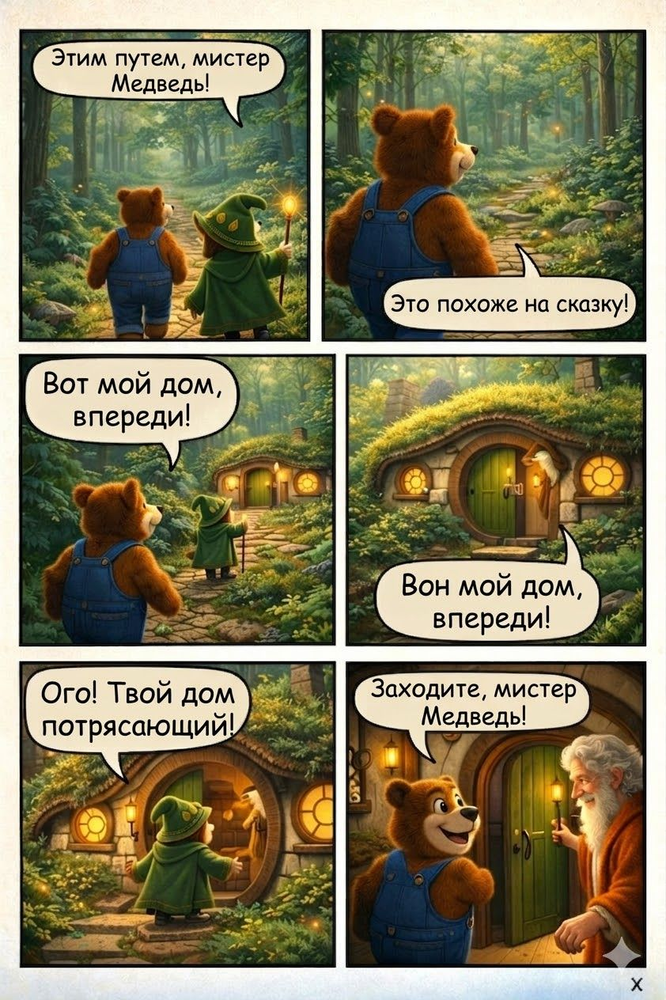
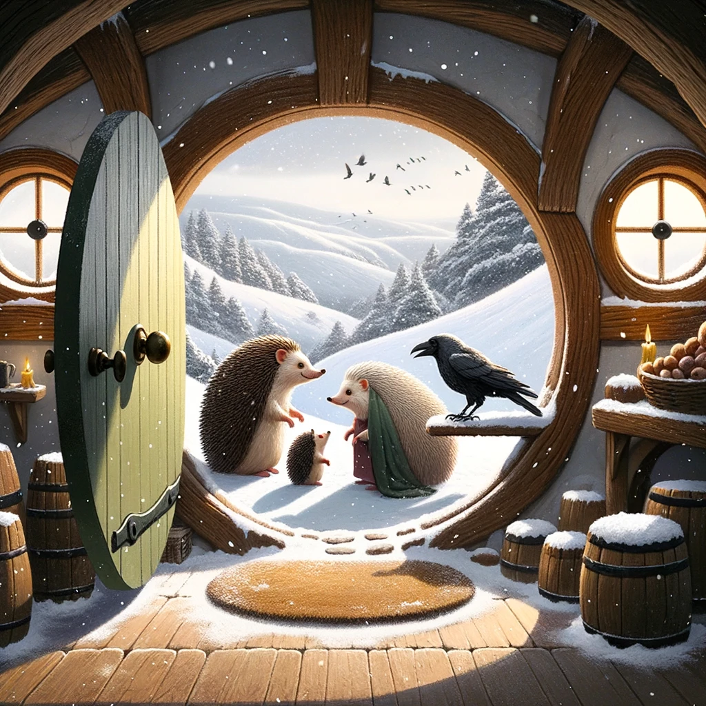
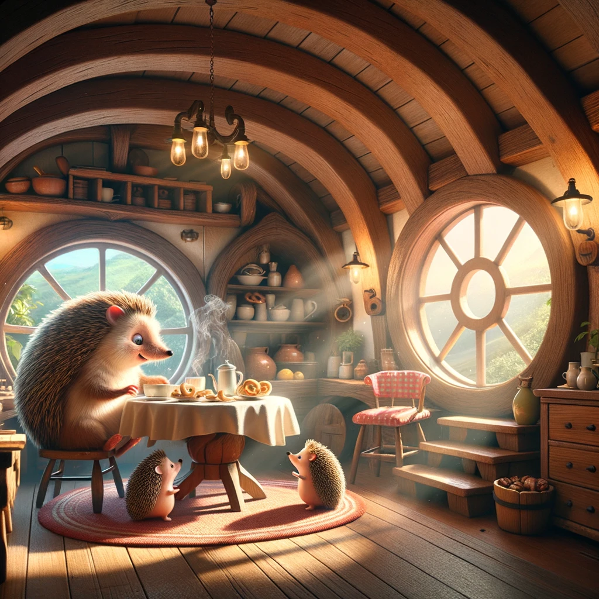
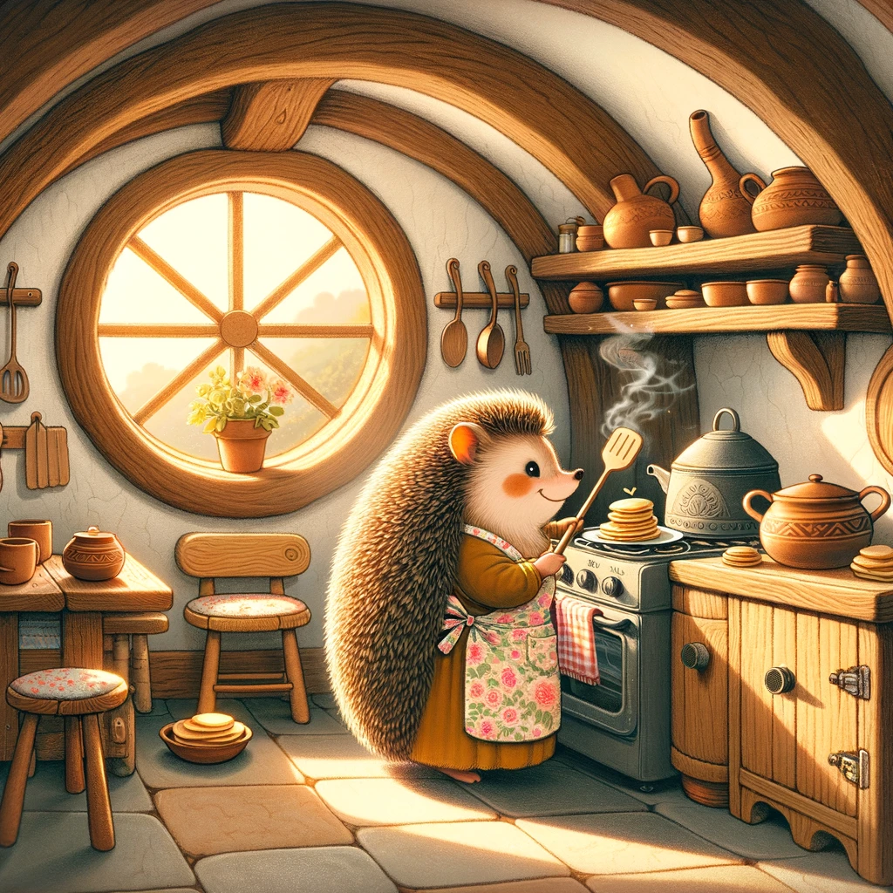
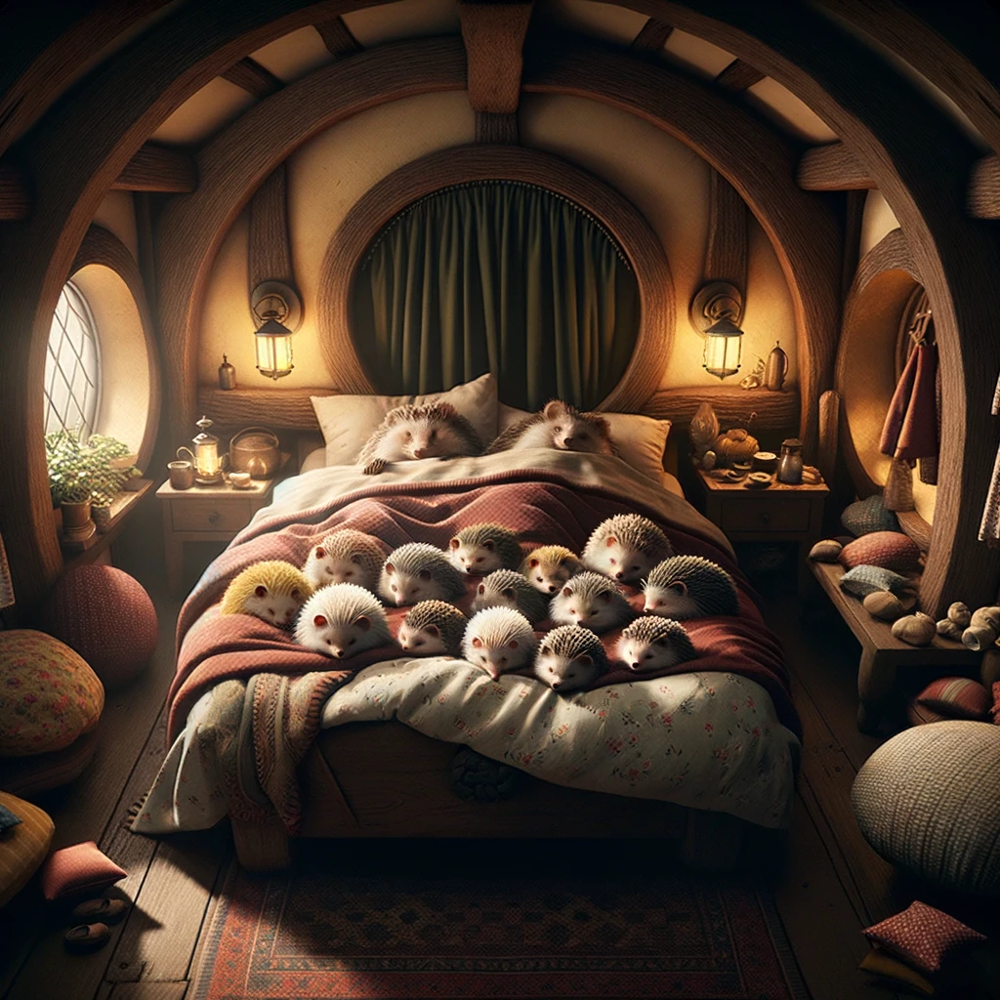
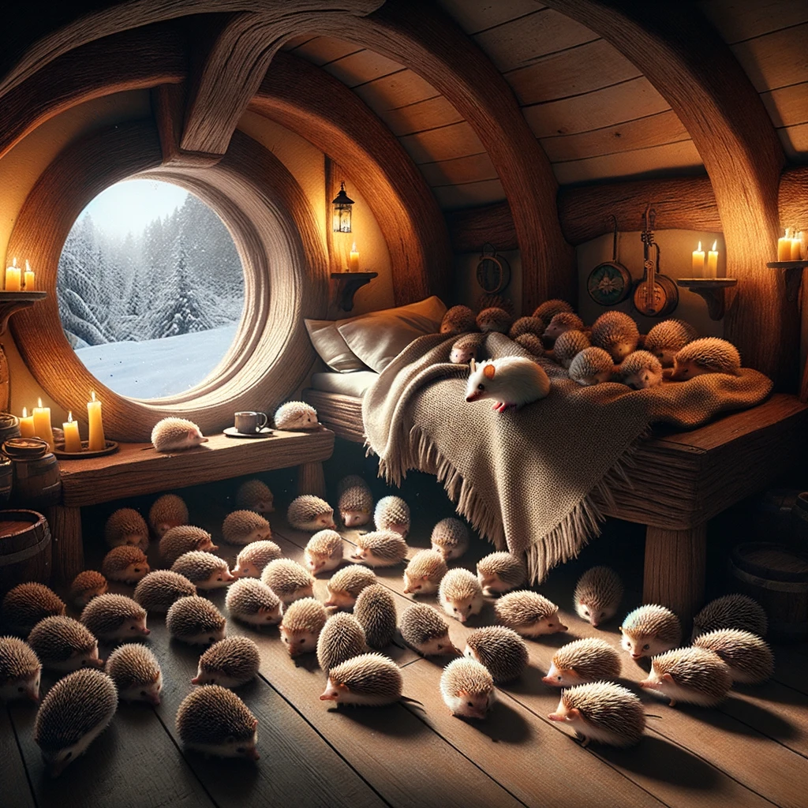
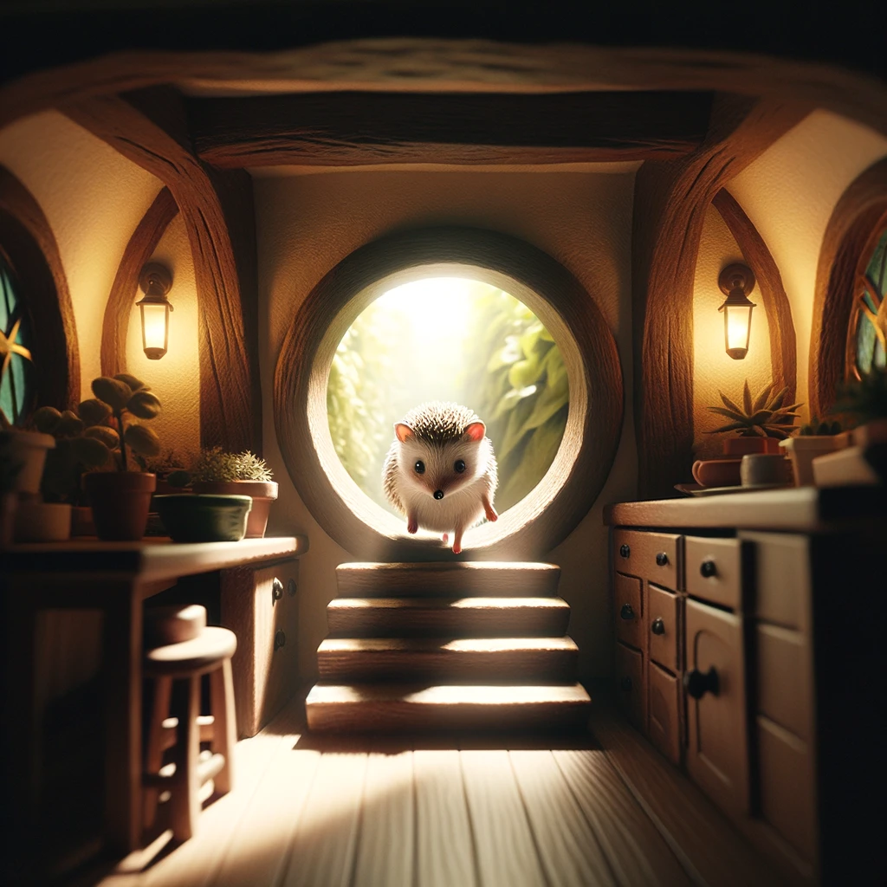

01 / Exterior
The cottage in the forest
Moss follows the curves of the roof. A stone path leads to a rounded green door, with glowing circular windows on either side.
Farm book / mr-pinpin-04.jpeg

02 / Entrance
Looking out through the front door
The original book repeats the green rounded door, round windows and curved timber framing. This is useful for the reverse camera angle when the family comes home.
Original book / Chapter 16 / image31.png

03 / Main style reference
The morning kitchen
Curved wooden beams, large circular windows, pottery shelves and a small breakfast table. This is the Chapter 34 rendering we would carry into the new homecoming scenes.
Original book / Chapter 34 / image18.png

04 / Kitchen details
The cooking corner
A stove, wooden cupboards, hanging utensils and shelves of clay pots give us the practical details beyond the breakfast table.
Original book / Chapter 35 / image95.png

05 / Family bedroom
A room full of warmth
An arched ceiling frames the bed. Quilts, bedside lanterns, a window nook and small wooden tables make the room feel lived in.
Original book / Chapter 17 / image46.png

06 / Bedroom, another treatment
The Chapter 34 sleeping room
A raised wooden bed, thick blankets and a circular window offer another bedroom view in the preferred dimensional style.
Original book / Chapter 34 / image45.png

07 / The connection to the garden
A little passage beyond the kitchen
Small steps lead to a circular opening between wooden cupboards and plants. In the accompanying chapter, the family connects the house to the underground greenhouse.
Original book / Chapter 37 / image42.png
